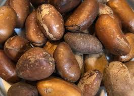
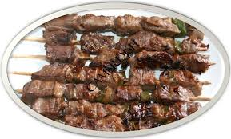
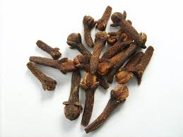
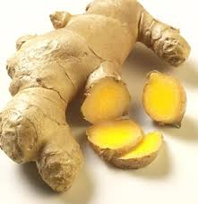
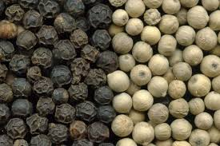

On dit de l'Afrique qu'il est le berceau de l'humanité, et du Cameroun qu'il est une Afrique en miniature mais c'est également un vaste pays aux cultures, décors et influences multiples. Et qui dit variété de cultures dit variété de saveurs ! Découvrez la cuisine africaine et camerounaise en réalisant une recette africaine et camerounaise parmi celles-ci.
Au Cameroun, il existe une très grande variété de préparations culinaires et de multiples traditions régionales, si bien qu'il est difficile de parler de la cuisine camerounaise comme un tout unifié. Il existe de nombreux plats régionaux qui se sont développés au point d'être reconnus au niveau national et international comme le poulet DG ou le ndolé. Beaucoup de plats régionaux, à l'origine, se sont également multipliés à travers le pays avec quelques variations d'une région à une autre.
De façon générale, l'alimentation des Camerounais est largement basée sur les produits végétaux comme le mil, le manioc les arachides, l'igname, la patate douce, le ndolé et les fruits tropicaux (banane, banane plantain, ananas, mangue, papaye…). Les Camerounais consomment aussi de la viande (bœuf, chèvre, porc, veau, (sous forme farcie ou grillée) ...) et beaucoup de poissons et de crevettes (sous forme grillée ou fumée et fraîche en eau douce), particulièrement dans les régions maritimes avec un emploi important de diverses épices.
Les plats classiques
- Le poulet DG, poulet frit avec des bananes plantains et des épicés
- Le poisson braisé (maquereau, bar, sole), cuit sur barbecue avec des condiments
- le pèbè 
- les soya qui sont des brochettes de viande ou des petits morceaux de viande cuits sur barbecue 
- la sauce d'arachide à la viande, au poisson ou au poisson fumé.
- le clou de girofle 
- Gingimbre 
- Poivre 

Le djansang est une graine ronde et blonde très présente dans la cuisine africaine. Son goût est très prononcée et elle se caractérise par des notes de cacahuètes. Elle est broyée ou écrasée avant d’être intégrée aux préparations à chaud.Ces amandes sont le fruit du Ricinodendron heudelotii, arbre oléagineux des forêts tropicales. Elles nous permettent d’épaissir nos préparations : soupes, bouillons de poissons. Elle est utilisée comme exhausteur de goût dans la cuisine africaine des peuples forestiers.Les amandes de Ricinodendron heudelotii sont relativement riches en protéines, matières grasses, en phosphore et en potassium. L’amande de «djansang » (Ricinodendron heudelotii) est très couramment utilisée et la forte teneur en huile des graines convient à son utilisation dans les usines de fabrication du savon et des vernis.

Le sel gemme est un minéral qui est également appelé halite. Il est utilisé pour cuisiner ou conserver des aliments. Exemple : Le sel gemme a une nature similaire au sel marin, mais on le trouve en creusant la terre et non dans la mer.
c'est une épice, une graine à coque cachée dans le fruit d'un arbre séculaire d'Afrique centrale. Une graine dure comme une noix, que l'on peut râper. On appelle d'ailleurs le pèbè fausse muscade. Sa saveur est à la fois acidulée et piquante. C'est une épice discrète, mais elle a du caractère ! C'est l'une des épices qui composent le mélange mbongo et c'est - avec le djansan - une alliée incontournable des grillades au Cameroun
Le basilic est une plante de la famille des Lamiacées (labiacées, labiées), tribu des Ocimeae, cultivée comme plante aromatique et condimentaire. Le plus connu est le basilic commun.Les feuilles de basilic sont utilisées comme herbe aromatique. Elles s'utilisent de préférence crues car leur arôme s'atténue à la cuisson. Elles accompagnent les crudités (salades, tomates, courgettes), les pâtes, les coquillages et les poissons, les œufs brouillés, le poulet, le lapin, le canard, les sauces (vinaigrettes au citron, à l'huile d'olive). Pour les plats chauds il faut l'ajouter juste avant de servir pour lui conserver sa saveur vive et fraîche. Toujours pour des raisons de préservation de son arôme, il ne se mixe pas, mais se broie dans un mortier avec un pilon.

c’est un fruit au goût plus ou moins piquant, dû à la présence d’une substance, la capsaicine, qui s’élimine avec les selles et l’urine. Son ingestion pourrait être favorable pour l’estomac, puisque la capsaicine provoque une meilleure sécrétion de la mucosité qui protège la muqueuse. En usage externe seulement, ses propriétés médicinales sont : antifongique (détruit les champignons et les moisissures), analgésique (qui supprime ou diminue la douleur), et antirhumatismale. Comme le poivre, une forte dose peut provoquer un rougissement et une augmentation de la sécrétion du suc gastrique, des petites hémorragies ou saignements importants, le cancer de l’œsophage chez les femmes. Il est déconseillé en cas de : gastrite, ulcère gastroduodénal, colite, hémorroïdes, prostatite et de cystite.
bouton floral d’un arbre asiatique au goût à la fois piquant et doux, il a des propriétés apéritives et carminatives, c’est-à-dire qu’il élimine les gaz intestinaux. Comme l’ail, le thym, le clou de girofle permet de conserver les graines comme le haricot, le maïs et les protègent de moisissure productrice de substances cancérigènes. Il est contre-indiqué en cas d’ulcère gastroduodénal. A forte dose, il est irritant pour le tube digestif.
son rhizome a une saveur douce et intensément aromatique. Ainsi, elle s’emploie dans divers plats, dans les fruits en conserve. A forte dose il produit des gastrites et est déconseillé en cas d’ulcère gastroduodénal.Suivant les repas, chaque peuple dispose dans son milieu des nombreuses herbes et plantes pour assaisonner ses plats, d’où la notion des plats traditionnels ou cuisine régionales. Cependant, aucun condi-ment ou épice ne peut être considérée comme indispensable du point de vue nutritif ou diététique. Malgré le fait que certains puissent présenter des inconvénients du point de vue diététique, d’autres sont clairement bénéfiques.
ce sont les fruits secs avec une coquille (poivre noir) ou sans coquille (poivre blanc) d’un arbre originaire de l’Inde cultivé actuellement au Cameroun. Son goût intense est dû à une substance, la pipéridine, qui stimule la production de sucs digestifs par une irritation et inflammation des muqueuses digestives. Le poivre facilite la digestion des repas lourds et riches en protéines et graisses. Son utilisation est particulièrement déconseillée en cas de gastrite, ulcère gastroduodénal, pancréatite, hémorroïdes, hypertension artérielle.